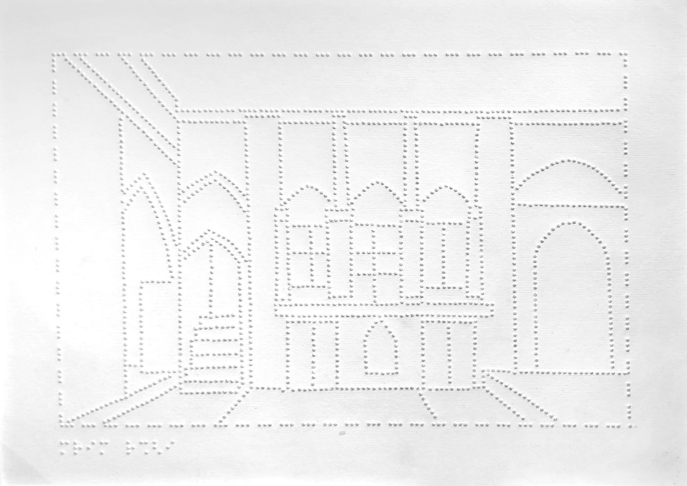
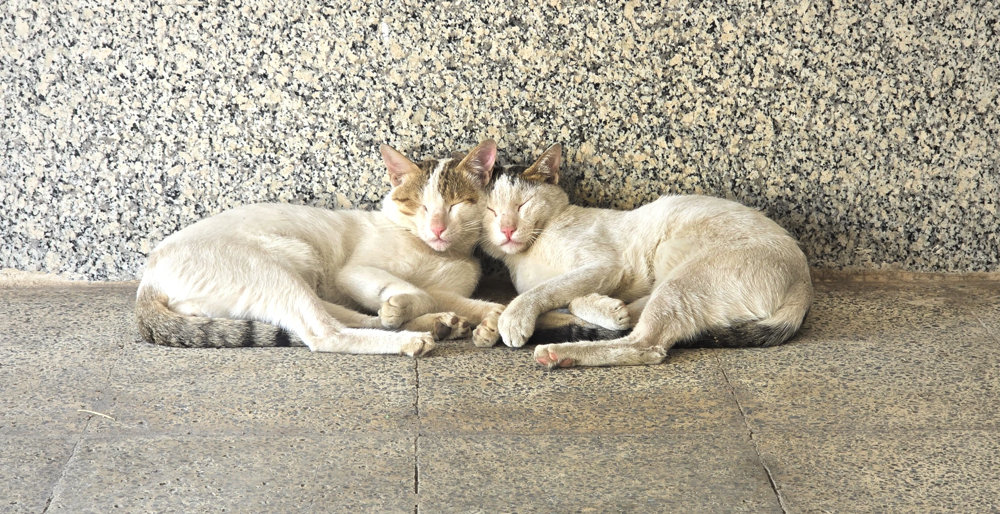
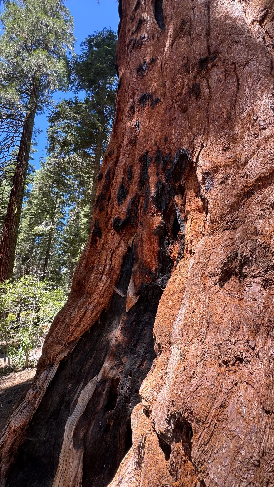
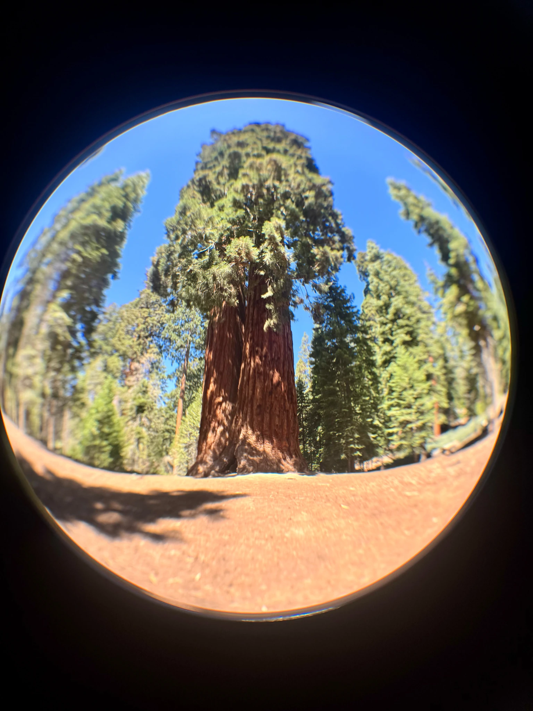
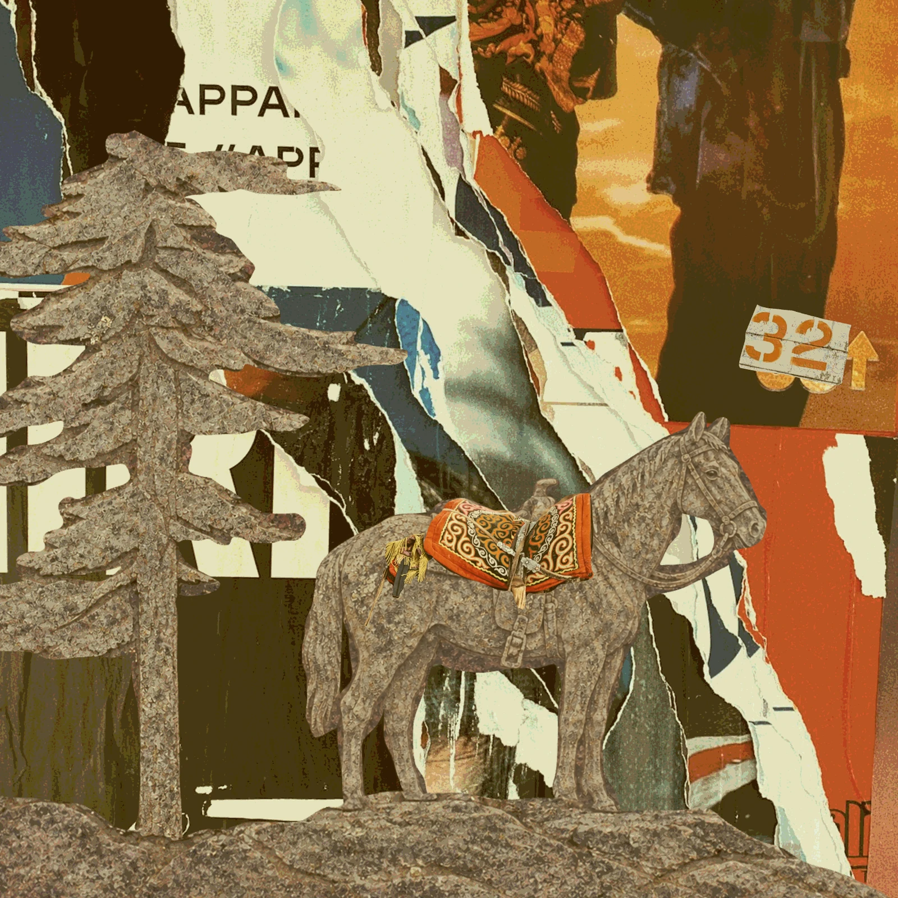
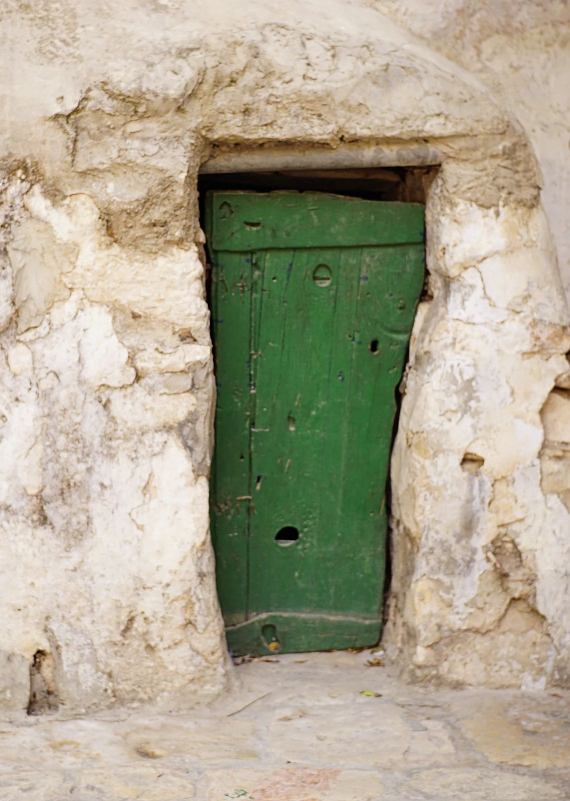
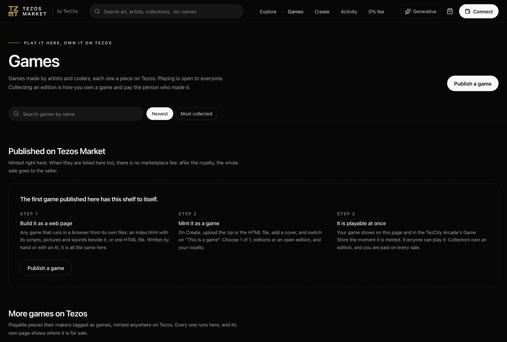
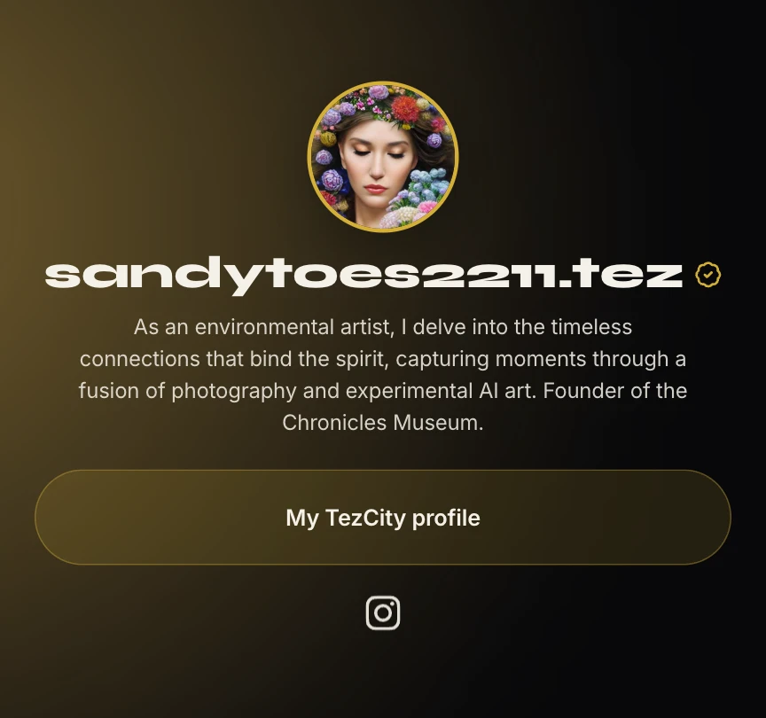

Music by Yoeshi Labs Right Now, Right Here: an album from 2012, minted as an interactive album in 2024 Jukebox design and music by Yoeshi, the interactive album's code by scuni
Artz Friday
November's Community Call
This Lounge is an experimental build in beta and may change frequently.
This device cannot open the Lounge, so the works are shown here as a gallery.

⠠⠁⠀⠠⠌⠕⠗⠽⠀⠷⠀⠠⠇⠊⠋⠑ A Story of LifemaryamobjktBehind this door, life once unfolded... this time, Khaneh-ye Firouzmandi came to life once again, not merely through the frame of a photograph, but through the touch of the hands of those who cannot see with their eyes, yet saw with their fingertips.View on objkt

⠠⠎⠳⠇⠀⠈⠯⠀⠠⠓⠑⠜⠞⠀⠠⠤⠀⠞⠺⠕⠀⠇⠇⠀⠎⠳⠇⠎⠂⠀⠐⠕⠀⠃⠂⠥⠞⠊⠰⠇⠀⠇⠕⠧⠑⠲ Soul & Heart — two little souls,one beautiful love.maryamTeiaWhen two hearts are close, even the stoniest place in the world feels filled with love and peace.View on Teia

Tree of LifeSandytoesTeiaThis is the living body of a giant sequoia, descended from an ancient lineage and capable of living for thousands of years. The heavens kept their stars. Earth answered with a tree.View on Teia

Sequoia Family TreeSandytoesTeiaThrough a fisheye, the familiar world bends and our perspective shifts. Perhaps ours needs to. A tree should still inspire wonder, mystery and gratitude.View on Teia

Granite 32FendelobjktMinted for Neighvember 2026. Digital collage combining photography and imagery from Trove.pictures, the app by Flex.View on objkt

Door To Monastic CellFendelobjktA small green door opens into one of the monastic cells of Deir es-Sultan, the centuries-old Ethiopian monastery situated on the rooftop of the Church of the Holy Sepulchre in Jerusalem's Old City.View on objktPrometheusCobwebSaintsTeiaElements pulled from the earth. Iron forged and shaped. Oil refined. A machine designed, built, broken apart, and put back together. Then imbued with a magic spark. Behold, I bring you fire. Created for the #PostAmericana Circus Maximus Event on Teia.View on TeiaPrancerland and Prancers Do AmericaYoeshiTeiaMy spin on Lewis Carroll's Cheshire Cat for TeiaTeatime26. Tap the cat, tap the cup. Prancers Do America opens in a Prancer Pads living room with the race on the television. Then we step through the screen.View on Teia

GamesTezos Market by TezCityTezos MarketGames made by artists and coders, each one a piece on Tezos. Playing is open to everyone.View on Tezos Market

sandytoes2211.tez on TezCitySandytoesTezCityAs an environmental artist, I delve into the timeless connections that bind the spirit, capturing moments through a fusion of photography and experimental AI art. Founder of the Chronicles Museum.View on TezCity
Credits
The art and words of maryam, Sandytoes, Fendel, CobwebSaints, HPLoveBux's curation and Yoeshi, from their mints.